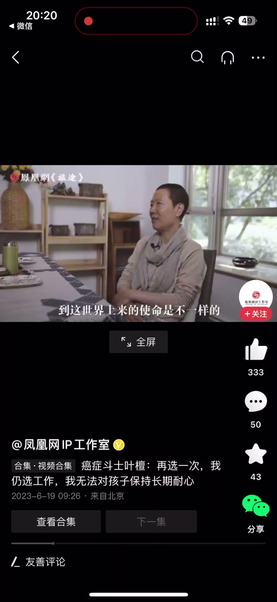
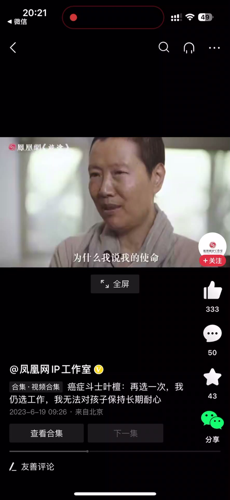
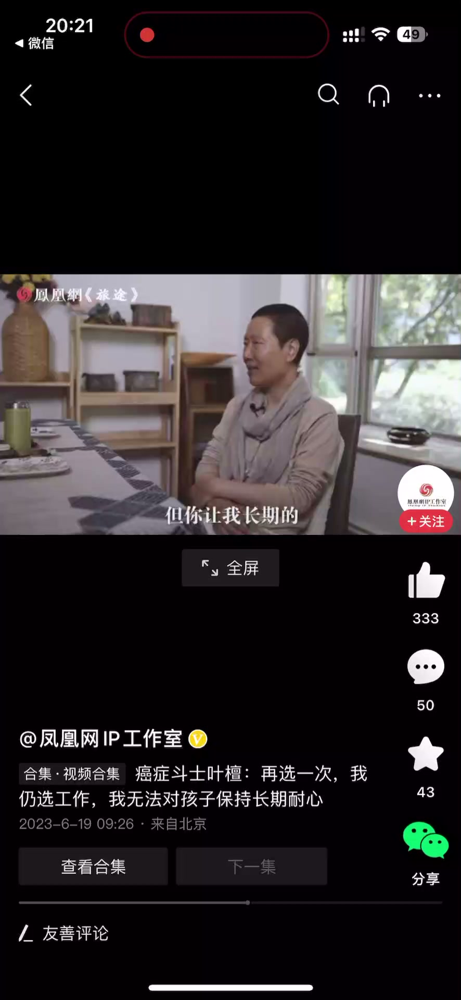
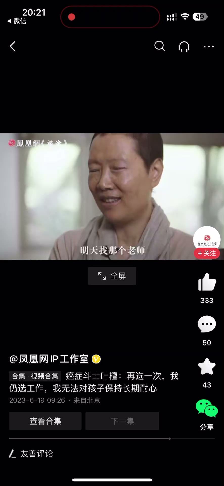
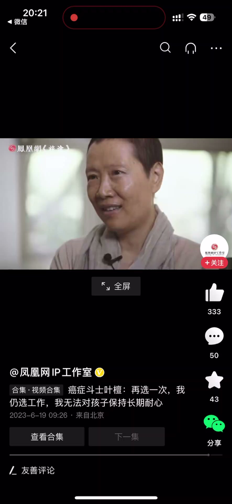

内容要点
一段 1 分钟的价值认同分享：有人问应该学投资、自我价值实现，还是建立亲密关系，讲者回答「每个人到世界上来的使命不一样」。老天给她的使命是做事，有的人的使命就是当好妈妈、照顾好孩子，都挺好，无所谓谁更好。她解释为什么自己不是当妈妈的料——做工作可以非常专注，但让她天天照顾孩子的吃喝拉撒、今天找这个老师明天找那个学校，她接受不了；如果当妈妈，在别人眼里恐怕也不是一个负责任的妈妈。
知识结构
每个人到世界上来的使命不一样：老天的使命大概就是做这些事情，有的人的使命就是当好妈妈照顾好孩子，都挺好，无所谓谁更好。
做工作可以非常专注，但长期照顾孩子的吃喝拉撒接受不了；做跟人接触的工作愿意，但天天找老师找学校、鉴别哪个学校最好不愿意；如果当妈妈，在别人眼里恐怕也不是个负责任的妈妈，所以走着走着就做成了现在这样。
人生使命不是单选题：投资、自我价值、亲密关系没有统一答案，当不当妈妈、做什么工作，取决于你的使命与舒适区，无所谓谁更好。
00:00-00:26每个人的使命不一样
有人从经济学的角度问：投资、自我价值实现，还是建立亲密关系，你觉得应该选哪一个？讲者的回答：每个人到世界上来的使命是不一样的。
老天给我的使命大概就是让我做这些事情的；有的人的使命就是当好妈妈、照顾好孩子。都挺好，无所谓谁更好的问题。
为什么我说我的使命大概是这样子的？因为你让我长期保持对于孩子的耐心和专注——我做工作可以非常专注，但你让我长期保持这个专注，然后天天吃喝拉撒（围着孩子转），恐怕我不是太接受得了。


00:27-00:59我的使命不是当妈妈
你让我去做一些工作上跟人接触，这我愿意；但是你让我天天去今天找这个老师、明天找那个老师、后天找那个学校，鉴别一下哪个学校最好，恐怕我也不是太愿意。
如果我是一个妈妈的话，在别人眼里恐怕不是一个太负责任的妈妈。
所以我就走着走着，就做成这样了——人最终会长成与自己的使命相匹配的样子。



完整转录（11段）
以下文本由 Whisper medium 模型自动转录，可能存在少量识别误差，已尽可能修正。
经济学的角度,投资、自我价值实现,还是说去建立亲密关系,你觉得应该学哪一个?
每个人到世界上来的使命是不一样的,老天给我的使命大概就是让我做这些事情的。
有的人的使命就是当好妈妈,照顾好孩子,都挺好,无所谓谁更好的问题。
为什么我说我的使命大概是这样子的?
因为你让我长期的保持对于孩子的耐心,专注,我做工作可以非常专注,
但你让我长期的保持这个专注,然后天天吃喝拉撒水,恐怕我不是太接受得了。
你让我去做一些工作上跟人接触,这我愿意,
但是你让我天天去今天找这个老师,明天找那个老师,然后后天找那个学校,
鉴别一下哪个学校最好,恐怕我也不是太愿意。
如果我是一个妈妈的话,在别人眼里恐怕不是一个太负责任的妈妈。
所以我就坐着坐着,我就做成这样了。